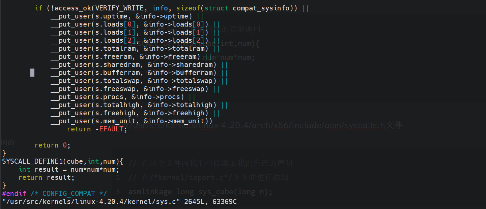

操作系统课设——CentOS增加系统调用
一、具体任务
采用编译内核法，在Linux中增加一个系统调用。
要求：
系统调用实现的功能：计算一个数字的三次方， 并打印出来。
另外写一个程序进行调用
相关思路：
本次实验实在CentOS 7系统中对于Linux内核源码进行修改，并对源码进行编译，最后完成切换内核操作，并在C语言程序中进行系统调用。
具体步骤：
下载Linux 4.20.4版本的源码
安装所需的工具和相关的编译环境
对源码进行修改并增加功能
对原本的系统环境内进行系统调用的添加
进行Linux内核的编译
编写C语言程序并在其中对添加的功能进行验证
二、CentOS系统的安装
本次系统安装采用了CentOS 7的系统，在VMware WorkStation中安装具体过程不在赘述，注意，尽量将CPU核数给多一些，以免编译的时间过长,建议存储空间大于40GB，防止出现内存不足的情况。
注意：安装完成以及下面每一步进行记得一定要打上快照，否则出现错误重新操作异常困难，养成打快照的好习惯
三、安装相关的系统环境
使用yum包管理工具将编译需要的相关工具进行安装，为下一步编译进行准备
1 | |
四、对源码进行下载并修改
下载源码
Linux的源码可以从其官方的网站下载，这里选择了Linux-4.20.4版本的源码
1 | |
修改源码
刚才我们将源码下载到了我们当前用户的根目录下，一般的CentOS 7使用的应该是root用户进行登录的，那么此时你的下载的源包就在/root目录下。
修改/usr/src/kernels/linux-4.20.4/kernel/sys.c文件

1 | |
修改/usr/src/kernels/linux-4.20.4/arch/x86/include/asm/syscalls.h文件
1 | |
五、添加系统调用号
修改/usr/src/kernels/linux-4.20.4/arch/x86/entry/syscalls/syscall_64.tbl文件

1 | |
六、准备并进行编译
1 | |
这里注意，在make设置的时候，移动光标直接选择load，由于Linux会隐藏点开头的文件，.config以及刚刚我们复制过来的文件config文件只有ll命令才能看见，ls命令无法查看。
选择load之后即可选择yes即可配置完成，将当前界面退出，使用ll -a命令我们可以发现原本的.config文件已经变成了.config.old,并且生成了一个新的.config文件，如下图。
下面我们可以进行编译了
1 | |
七、写程序进行验证
编写验证程序
新建一个C语言程序test.c进行验证
1 | |